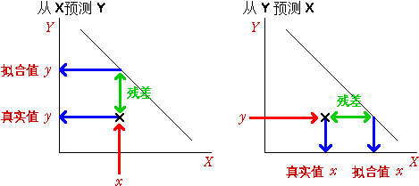

使用不同的线预测Y和X
相关系数关于两个变量对称----X和Y的相关系数和Y和X的相关系数相同。 然而，最小二乘直线给出的从X到Y的预测和从Y到X的预测是不同的(即使方程经过了重新安排)。
如果散点图是以Y为竖轴，那么最小二乘线，
y = b0 + b1 x
是由X预测Y。这样的线是通过极小化数据点到线的竖直距离的平方和而得到。另一方面，如果我们感兴趣用一条线x = c0 + c1 y
由Y的值预测X的值，那么这时残差成了点到线的水平距离，最小二乘是极小化这些水平距离的平方和。.
不同的线分别是由最小化水平距离的平方和及最小化竖直距离的平方和而得到。
关于两种最小二乘直线
两种最小二乘直线可以表达成标准化变量的形式，
| 由X的值预测Y的值的最小二乘直线方程 | |
|---|---|
| 由Y的值预测X的值的最小二乘直线方程 |
其中 r是 X 和 Y的相关系数。因为 r总小於1，由X的值预测Y的值的最小二乘直线更‘平’(斜率小)。
两兄弟的体重
以下的散点图给出年龄在10到30岁的兄弟的体重(以公斤为单位)。
最初画在散点图的直线看起来对数据拟合得很好。由这条线给出的预测是：每一对兄弟的体重是相同的。然而，这条线不是预测哥哥体重的最小二乘直线。
点击散点图下的小方框 哥哥。我们可以看到用弟弟体重预测哥哥体重的直线产生的残差。这些残差的平方和也在散点图下面给出。拖动红色的箭头 使散点图里的线旋转，观察当直线靠近水平轴时残差平方和变小。
现在不选小方框哥哥而选中小方框弟弟。我们可以看到用哥哥体重预测弟弟体重的直线产生的残差(由水平线给出)及这些残差的平方和。拖动这条直线，观察当直线靠近竖轴时残差平方和变小。